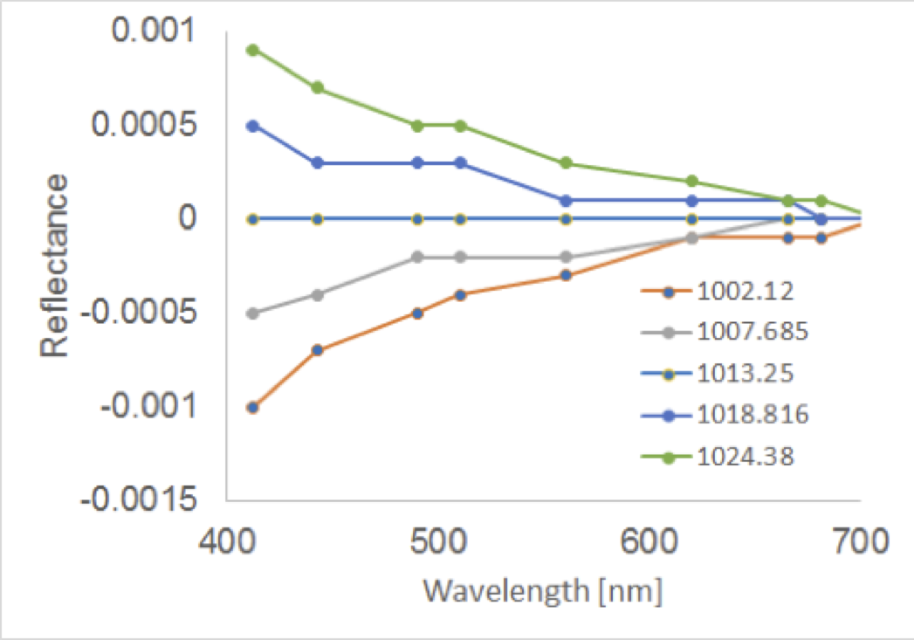

The Data Challenge is based around ocean colour Atmospheric Correction (AC) and the use of auxiliary information that’s needed when processing the data from Level 1 (Top of Atmosphere, TOA, calibrated radiances/reflectances) to Level 2 products (Bottom of Atmosphere, BOA, calibrated radiances/reflectance and derived products), i.e. this contest has an application focus.
Scientific researchers often accept the auxiliary inputs that they’re provided with and/or use the climatological data that accompanies the processing software; commonly because it can be difficult to obtain multiple data sources and convert them into a format the software accepts. Therefore, as an initial contest it’s proposed to compare various ocean colour AC approaches and in the process study the uncertainties associated with using different meteorological auxiliary products for the processing of Medium Resolution Imaging Spectrometer (MERIS) imagery i.e. the sensitivity of different AC assumptions. In future this could be extended to further missions such as MODIS, SeaWiFS and the near-future Sentinel-3 OLCI data. The following meteorological data, provided by the European Centre for Medium-Range Weather Forecasts (ECMWF), are resampled to the MERIS tie point grid (sub-grid of pixels with an approx. 16 km spatial step in both along- and across-track directions) and provided to users within the Level 1 files:
There were two potential sources of meteorological data for MERIS data processing, AUX_ECF_AX (ECMWF Forecast data) and AUX_ECA_AX (ECMWF Analysis data). The AUX_ECF Auxiliary Data Files (ADFs) were provided in advance of acquisition to allow Near Real Time (NRT) processing of recently-acquired satellite data products while the AUX_ECA ADFs are provided several hours after acquisition to enable NRT products to be consolidated. However, there were also changes to ADFs as the ECMWF forecast model is updated (called cycles) i.e. where the input MERIS ADF data and hence what’s held in the Level 1 file will change (potentially significantly) between two successive passes; a full list of the cycles is given at [RD-2]. The influence of a change in the ECMWF model was noticed by the Telespazio VEGA lead Instrument Data quality Evaluation and Analysis Service (IDEAS) MERIS Team when they investigated the potential effects of a new version of the ECMWF forecasting and analysis system, Cycle 37r2 implemented by ECMWF on 18 May 2011, that included both meteorological and technical changes.
Auxiliary data files generated using both the previous (Cycle 36r4) and new (Cycle 37r2) models were provided to IDEAS for assessment; used to generate 2 sets of Level 1 and then 2 files. Changes were seen within a processed (from Level 0) MERIS image, captured on 13 September 2011, with a large proportion of the changes in the Level 2 flags being due to the changing glint classification; a result of the changed Zonal and Meridional wind speeds within the model update. The changes in land surface reflectance were much smaller, than that shown over water, with all reflectance bands having a mean percentage change of less than 0.5%. It was also apparent that, at least in some instances, there can be large differences in MERIS Level 2 product data due to differences between the ECMWF forecast and analysed parameters.
This investigation by IDEAS was reported to the MERIS Quality Working Group (QWG) who have since decided that the 4th reprocessing will use ECMWF ERA-Interim reanalysis data so that the full MERIS archive uses a consistent source of auxiliary data. In addition, the Ocean Colour Climate Change Initiative (OC_CCI) in Phase 1 produced a technical note that reviewed the impact of the ancillary data on Polymer processing that followed on from the Input Output Data Definition (IODD). It concluded that the choice of wind speed and atmospheric pressure does not have a significant effect on the results.
However, when using the ozone parameter from ERA-Interim instead of initially provided ECMWF data, a bias appeared but that the residual error does not significantly change and so the accuracy of the products is not improved by choosing any of the two datasets. This could mean that POLYMER is more stable than the MERIS Instrument Processing Facility (IPF) or that the chosen datasets didn’t happen to differ significantly.
Phase 2 of the OC_CCI will use ERA-Interim data as the meteorological input data for all data sets being generated.
Initial research presented by Dr Lavender at the ESA 2013 Living Planet Symposium showed that small, but likely insignificant, variations in the BOA reflectances can be caused by varying the atmospheric pressure; see Figure 1.

In this example a ‘simplistic’ AC was updated to process MERIS imagery; single scattering aerosol estimation using the angstrom exponent for aerosol extrapolation. The differences are higher in the blue (shorter) wavelength region as the atmospheric pressure influences the determination of the Rayleigh scattering.
Therefore, in summary, a Data Challenge to run different AC models / code on the E-CEO Data Challenges platform with varying meteorological auxiliary information can provide an insight into both the models and variations caused by (sensitivity to) the auxiliary information.